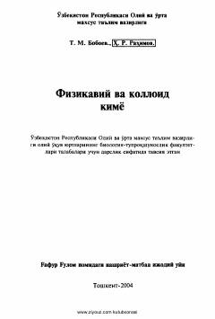

ФВBiologiya va turdosh yo'nalishlar talabalari uchun fizikaviy va kolloid kimyo asoslari.
Ushbu darslik oliy o'quv yurtlarining biologiya-tuproqshunoslik fakultetlari talabalari uchun mo'ljallangan bo'lib, fizikaviy, kolloid va yuqorimolekulyar birikmalar kimzosining asosiy masalalarini yoritadi. Kitobda moddalarning agregat holati, termodinamika asoslari, eritmalar, elektrokimyo hamda biologik ob'ektlardagi jarayonlardan misollar keltirib o'tilgan. Shuningdek, u qishloq xo'jaligi institutlari va tibbiyot oliygohlari talabalari uchun ham qo'llanma sifatida xizmat qiladi.